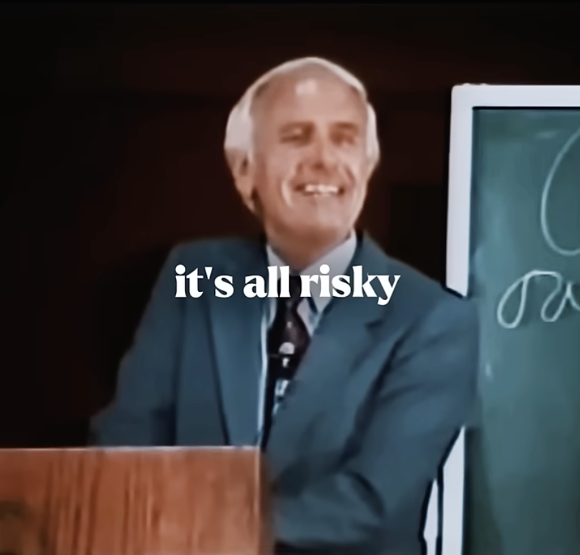
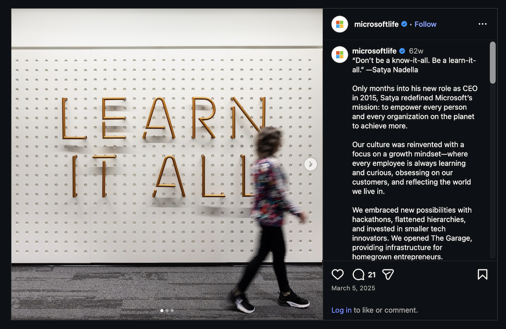
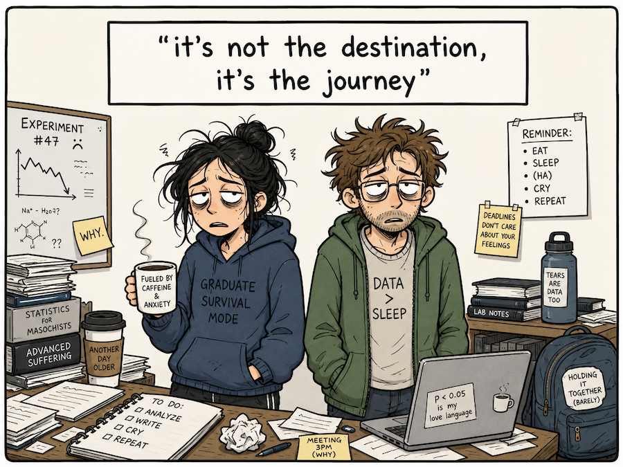

Associate Teaching Professor
Carnegie Mellon University
People tell me I have a weird resume. From academia to a big company to a few startups, back to academia, and then another startup before going back to a big company.
Zig, zag, ping, pong.
When I first switched from tenure-track faculty to big tech, a lot of faculty reached out to me. They had been thinking about doing the same thing, usually for years, and wanted to know how I finally made the leap and whether it was everything they dreamed it would be.
I didn't understand why they never did anything about it.
When I left Big Tech™ to join a startup, a lot of people reached out again, saying they'd always wanted to do a startup and wanted to know how I made the leap.
This time I understood their hesitancy a bit more. Startups are scary.

I recently made another career change, leaving academia again to join a big company, and a few people commented that I "need to figure out what I want in life". This doesn't make sense to me.
Why do people treat a job like a marriage? Are we only allowed one occupation? How is staying in one job any more figured out than trying new things? Consistency should be in curiosity, not in keeping the same title or employer.

What I want is to keep learning. Spending time in academia, big tech, and startups each taught me things that I wouldn't have learned otherwise.
Tenure-track faculty was my first full-time job. It granted supreme freedom to work when and where on whatever I wanted, as long as I checked a few boxes in terms of funding, publications, service, and teaching. The sudden shift from grad student to virtually unsupervised was jolting. At the end of the day, I had to show progress of some kind, and no one else was going to do it for me. Many people thought I had the best job in the world. Yet I wanted more... to go go go and to build something substantial.
Then I went to Big Tech, surrounded by the teams behind products that I had been using for years. It was a long lesson in influencing without any sort of authority. How do you steer a large ship when you are one of many, many people working on it? In stark contrast to academia, I now had too many projects, people, and opinions that I could work on. But how do I contribute my own thoughts? I had spent my entire career before this formulating and executing on my own ideas.
At the first startup, I essentially earned my MBA in a quick 3 months. It was a lot of fun being able to build whatever I thought was the highest priority for the team each day, but that turned out to be a really small part. Instead I was talking to customers, managing investors, sifting through data, reading contracts, and growing the team. It was miraculous that it worked out as well as it did (so many things have to go right, even the things you can't control). I've also been on the other side of a startup where everyone is working relentlessly, yet the traction never comes. You have to enjoy the process regardless of the outcome.

So I strongly disagree with the premise that we have to settle on one job. Complacency is a terrible, terrible thing.
My advice? Try it all, if you want. Or become a farmer.
"The more you pursue interests, the more you realize that the well is bottomless" - Kevin Kelly